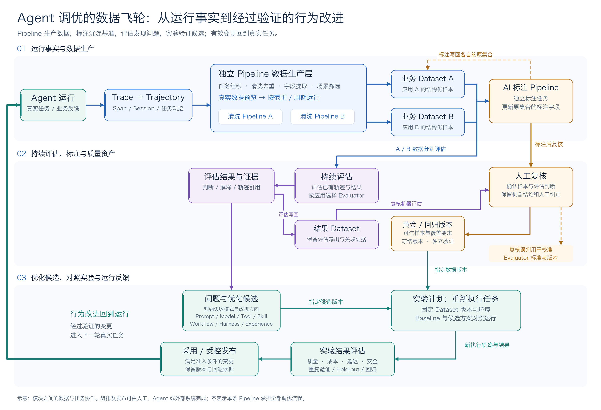

第 18 章 Agent 调优总览¶
模型调优改变的是模型本身的能力，智能体调优改变的是一个已经上线的 Agent 怎样使用模型、工具与业务规则，把任务反复做好。第 17 至 22 章围绕同一条主线展开：把每一次真实运行留下的事实，整理成可复用的样本、可检查的标准和可验证的改动，再把有效改动带回运行环境，形成持续改进的数据飞轮。
本章先给出数据飞轮的整体图景，说明为什么 Agent 上线后仍要持续回答"任务有没有做好、做好花了多少代价"，以及各模块怎样围绕同一任务连接。随后五章依次展开飞轮的各个环节：第 18 章把分散的运行记录组织成可阅读、可分析的轨迹；第 19 章用声明式 Pipeline 将轨迹持续加工为业务样本；第 20 章把样本确认为可复用的黄金数据集；第 21 章用持续评估发现问题、用实验比较改动；第 22 章把验证有效的方法沉淀为 Skill、经验与运行机制的改进。
阅读方式上，建议先读本章建立整体认识，再按顺序了解各环节如何衔接。真正着手时不必读完全部内容，可以从团队当前最想解决的问题入手——排障、成本或业务质检——沿"找到问题、确认标准、验证改动"这条路径先把第一轮做完，再逐步补齐其余环节。各章都遵循同样的次序：先说明从哪里开始、怎样操作，再说明拿到结果后该做什么。
18.1 Agent 上线以后，还要持续回答哪些问题¶
传统应用主要通过代码规定行为：什么条件进入哪个分支，调用哪个接口，怎样处理返回值。在输入、状态和外部依赖相同的前提下，确定性逻辑的执行通常可以预测和复现。研发人员围绕明确的功能契约编写测试，检查实现是否符合预期。
Agent 把其中一部分决策交给了模型。开发者给出目标、工具和约束，模型在运行时理解意图、规划步骤、选择工具，再根据中间结果调整行动。同一个任务，可能因为上下文、工具反馈或生成结果不同而走出不同的路径。
以退款为例，接口可以根据订单状态和规则判断是否允许退款，Agent 还要从对话中确认用户指的是哪笔订单，识别适用规则，选择操作，并核实退款是否完成。对话顺利结束、接口没有报错，都不足以说明这件事办对了。
| 关注点 | 传统应用中的确定性业务逻辑 | Agent 应用新增的要求 |
|---|---|---|
| 执行路径 | 检查代码规定的分支 | 检查模型为什么选择这条路径，以及中间反馈怎样影响后续行动 |
| 正确性 | 验证接口契约和状态转换 | 同时验证目标达成、业务约束和交付结果 |
| 故障定位 | 查找代码或依赖的异常 | 进一步区分理解、上下文、工具使用和恢复策略的问题 |
| 变更验证 | 检查功能和历史场景 | 还要观察重复执行是否稳定，以及质量、成本、延迟怎样变化 |
传统应用也会遇到故障和环境变化，Agent 同样需要单元测试和集成测试。区别在于，Agent 的执行即使没有技术错误，也可能偏离业务目标；一次任务成功之后，还需要确认同类任务能否反复做好。
Benchmark 提醒我们：会做、做完和稳定交付是不同层次¶
公开测试一方面展示了 Agent 的进步，另一方面也说明，任务长度、业务约束和执行条件都会影响效果。下面保留几组有明确日期的结果，用来说明为什么企业需要在自己的业务上建立评估。
| 测试场景 | 公开实验快照 | 需要关注的问题 |
|---|---|---|
| SWE-Bench Pro（Public），软件工程任务 | OpenAI 2026-03-05 报告：GPT-5.4 为 57.7%，研究环境、默认 xhigh 推理设置。原始报告 | 在该任务与配置下，端到端完成仍有改进空间。 |
| OSWorld-Verified，桌面操作 | 同一报告中，GPT-5.4 为 75.0%，GPT-5.2 为 47.3%；报告引用的人类成绩为 72.4%。原始报告 | 能力进步很快，业务交付仍要逐项确认是否完成。 |
| OSWorld 2.0，长流程任务 | 2026-07-13 论文 v2，108 个任务、500 步预算、最高思考水平及批量动作配置：Claude Opus 4.8 的严格完成率为 20.6%，部分得分为 54.8%。论文表 3 | 完成许多中间步骤，并不等于交付了完整结果。 |
| τ-bench，业务规则下的工具与用户交互 | 2024-06-17 原论文：GPT-4o 原生工具调用在零售任务上的 pass¹ 为 61.2%，pass⁸ 低于 25%。原论文 | 一次做对之后，还要检查重复执行的可靠性。 |
这些是各自测试条件下的结果，不代表当前最高分，也不能直接换算为企业业务成功率。OSWorld 2.0 的部分得分不等于完整成功率；τ-bench 的 pass⁸ 指同一任务八次执行全部成功，区别于“八次中至少成功一次”的 pass@8。
上线后的团队需要持续回答两组问题：任务有没有做好，以及把它做好花了多少代价。 一条回答正确的轨迹，可能反复查了相同资料；一次 Token 明显减少的执行，也可能省掉了必要验证。调优要同时看业务结果、执行过程、时间和成本。模型、工具、业务规则或用户需求变化以后，原有结论还需要复查。
评估负责把“好不好”落实为可检查的标准和结果；调优负责根据这些结果改变系统。二者需要通过真实任务连起来，否则团队要么只有分数，没有修改方向，要么不断改 Prompt，却说不清哪些修改有效。
18.2 、数据飞轮怎样把运行经验变成改进¶
一次排障往往能修好眼前的问题，却未必能帮助下一次排障。工程师记得原因，相关 Trace 散在日志里，修复记录又在另一个系统；几周后，同类问题换一种表述再次出现，团队仍然要从头查起。
数据飞轮要解决的就是这种断裂。它把一次执行留下的事实整理成可复用样本，用评估找出问题，用实验检验修改，再把有效变更带回 Agent 的运行环境。过程中留下的轨迹、样本、评分规则、失败模式和版本记录，也可以被下一轮工作继续使用。
这里有两条需要同时推进的反馈路径。
一条改进数据和判断方法。例如，客服 Agent 在“有哪些功能”和“如何配置评估”两类问题上，需要覆盖的内容不同。操作演示最初把两道题的规则写在同一个评估器里，实验之后才发现标准不合适。团队于是给 Dataset 增加题目级 Rubric，逐题填写，再修改变量映射并重新实验。运行结果帮助团队改进了用来判断结果的标准。
另一条改进 Agent 的行为。评估确认缺少配置步骤后，团队可以补充 Skill；发现工具用错后，可以修改工具描述；发现超时后反复提交，可以检查重试和结果核实逻辑。这些修改先成为候选，经过同条件实验和回归，再决定是否采用。
因此，数据在调优中承担两种作用：帮助判断应该改哪里，也帮助拒绝没有效果或带来退化的修改。样本数量增加、经验入库、候选生成，都还只是过程产物。有效变更进入运行以后，新任务的结果才提供下一轮反馈。
18.3 、围绕同一任务连接各个模块¶
下图展示了 Agent 观测与优化中这些工作的关系。主干从真实运行开始，经过轨迹组织和 Pipeline 加工，形成不同用途的数据，再进入评估、实验与优化；旁路负责人工复核、评估器校准和经验使用。
图 1 Agent 数据飞轮总体架构

Pipeline 是这套架构中的数据生产层。 原始 Trace 以调用和事件为单位，评估可能要检查完整任务，实验可能只需要任务输入和预期行为，成本分析又要保留调用量与耗时。Pipeline 按这些目标组织数据、提取字段、筛选和去重，把一套加工规则变成可以按范围或周期执行的工作。不同用途可以配置不同管线，已经进入 Dataset 的样本还可以通过独立的 AI 标注任务补充标签。
这些模块最终要帮助团队做出业务决定。可以从自己正在遇到的问题选择入口：
| 模块 | 用户怎样使用 | 帮助业务完成什么 |
|---|---|---|
| Trace 与 Trajectory | 按应用、问题、工具或耗时搜索任务，展开步骤，选入数据集 | 找到答错、反复操作或耗时过长的原因 |
| Pipeline | 选择数据源和模板，配置业务字段、过滤与标注，预览后持续运行 | 把每天的运行记录变成质检人员和评估器能直接使用的样本 |
| Dataset 与人工复核 | 导入真实问题，填写参考答案与评分要求，确认后保存题库版本 | 积累可重复使用的业务验收题，减少每次升级重新准备测试的工作 |
| Evaluator 与持续评估 | 配置标准，用真实样本试评，再对指定范围持续检查 | 发现哪些场景需要改进，将人工阅读精力集中到值得处理的问题 |
| Experiment | 让当前方案与候选执行同一批题，比较逐题结果、成本和耗时 | 决定是否换模型、采用新 Prompt 或上线改动 |
| Trace2Optimizers | 从问题改进 Skill、工具与运行机制，或把历史方法送入经验召回 | 减少重复犯错与重复探索，使验证有效的方法参与后续任务 |
这些模块不必排成一条只能向前走的流水线。评估结果可以写回 Dataset 供人工复核；复核既可能修正样本，也可能修正评估器；优化候选需要回到实验；已采用的 Skill、Harness 或经验又会改变后续轨迹。具体发布仍要接入 Agent 所在系统的交付流程。
以退款超时为例，Agent 看到工具超时后再次提交，但业务记录显示第一次操作已经成功。补齐业务结果并建立关联后，轨迹和 Pipeline 才能把相关调用组织为同一任务样本。评估指出结果核实有问题，人工确认预期做法，调优再选择补状态查询、修改 Skill，还是修复工具的幂等与重试逻辑。实验要覆盖成功、失败和结果不确定等情况，检查重复操作是否减少、正常任务是否受影响。
这个例子也说明了模块边界：轨迹组织不能凭空补出业务事实，Pipeline 不能替代人工确认，评估不能代替候选执行，保存了一个版本也不等于运行中的 Agent 已经使用它。各环节把自己的输入、产物和实际执行记录关联起来，团队才能沿着结果追到原因，再沿着变更检查效果。
18.4 、从一个业务问题开始，把第一轮做完¶
第一次建设调优流程时，先选一个团队确实想解决的问题。例如，产品客服能够回答概念，却经常漏掉操作步骤；研发 Agent 能定位问题，却反复读取同一批日志；报告 Agent 能生成文件，却会引用过期数据。它们各有明确的改进目标，也有可以核实的结果。
以“产品客服遗漏操作步骤”为例，一轮调优可以这样完成：
-
找到真实问题。 在“数据中心 → Agent 轨迹”中选择客服应用，搜索操作咨询，打开几条用户仍在追问的任务，查看最初要求和实际回答。
-
把问题持续收集起来。 少量任务直接加入数据集；需要日常质检时，创建 Pipeline，提取问题、回答和轨迹引用，预览后运行，持续写入候选集。
-
把业务要求写成题库。 产品或客服人员确认参考答案，在每道题的
rubric中写明应包含的步骤，选入黄金集。例如“如何做评估”应包含准备数据、选择评估器、配置映射和查看结果。 -
先知道哪里没做好。 创建评估器，对几道已知题试评，确认它能指出遗漏，再用于更多真实任务。持续评估负责找新问题，人工把其中有价值的题补回题库。
-
修改后让两个版本都做题。 为客服补充操作 Skill，或调整知识与 Prompt。用同一份黄金集分别运行旧版和新版，查看操作题是否改善，功能介绍等正常题是否保持，成本和耗时能否接受。
-
采用有效方案，继续接收反馈。 将验证通过的版本交给应用发布流程，确认它实际生效。后续任务仍进入同一套数据与评估流程，新问题继续成为下一轮题目。
这一轮留下的不只是一个改过的 Prompt，还包括一份可复用题库、一套评分要求、改动前后的结果，以及持续收集问题的管线。下一次换模型或升级产品时，这些材料可以直接继续使用。
业务人员负责确认目标和正确要求，应用团队负责改动与接入，测试和运营使用固定题库与运行反馈检查效果。等这条路径稳定后，再增加场景、周期任务和自动化。具体实现原理会在后文适当说明，各章首先回答用户从哪里开始、怎样操作，以及拿到结果后该做什么。